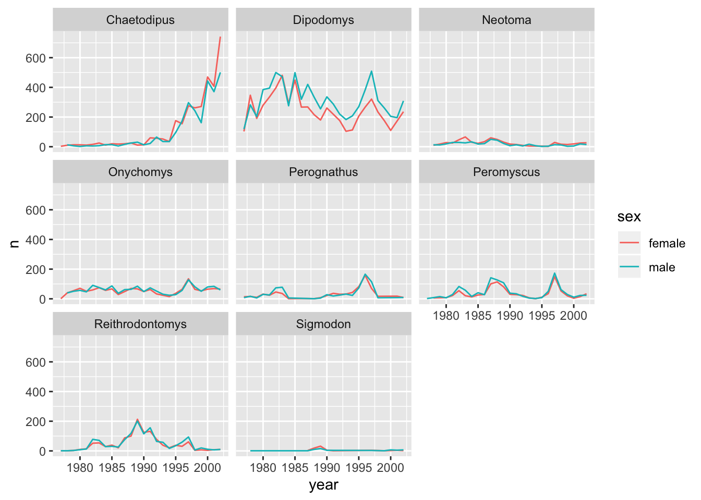

Producing Reports With knitr
Software Carpentry contributors
Learning Objectives
- Understand the value of writing reproducible reports
- Learn how to recognise and compile the basic components of an R Markdown file
- Become familiar with R code chunks, and understand their purpose, structure and options
- Demonstrate the use of inline chunks for weaving R outputs into text blocks, for example when discussing the results of some calculations
- Be aware of alternative output formats to which an R Markdown file can be exported
Data analysis reports
Data analysts tend to write a lot of reports, describing their analyses and results, for their collaborators or to document their work for future reference.
Many new users begin by first writing a single R script containing all of the work. Then simply share the analysis by emailing the script and various graphs as attachments. But this can be cumbersome, requiring a lengthy discussion to explain which attachment was which result.
Writing formal reports with Word or LaTeX can simplify this by incorporating both the analysis report and output graphs into a single document. But tweaking formatting to make figures look correct and fix obnoxious page breaks can be tedious and lead to a lengthy “whack a mole” game of fixing new mistakes resulting from a single formatting change.
Creating a web page (as an html file) by using R Markdown makes things easier. The report can be one long stream, so tall figures that wouldn’t ordinary fit on one page can be kept full size and easier to read, since the reader can simply keep scrolling. Formatting is simple and easy to modify, allowing you to spend more time on your analyses instead of writing reports.
Literate programming
Ideally, such analysis reports are reproducible documents: If an error is discovered, or if some additional subjects are added to the data, you can just re-compile the report and get the new or corrected results (versus having to reconstruct figures, paste them into a Word document, and further hand-edit various detailed results).
The key R package is knitr. It allows you to create a document that is a mixture of text and chunks of code. When the document is processed by knitr, chunks of code will be executed, and graphs or other results inserted into the final document.
This sort of idea has been called “literate programming”.
knitr allows you to mix basically any sort of text with code from different programming languages, but we recommend that you use R Markdown, which mixes Markdown with R. Markdown is a light-weight mark-up language for creating web pages.
Creating an R Markdown file
Within RStudio, click File → New File → R Markdown and you’ll get a dialog box like this:

You can stick with the default (HTML output), but give it a title.
Basic components of R Markdown
The initial chunk of text (header) contains instructions for R to specify what kind of document will be created, and the options chosen. You can use the header to give your document a title, author, date, and tell it that you’re going to want to produce html output (in other words, a web page).
---
title: "Data Carpentry Demo: Mammal survey"
author: "Your name"
date: "2019-10-09"
output: html_document
---You can delete any of those fields if you don’t want them included. The double-quotes aren’t strictly necessary in this case. They’re mostly needed if you want to include a colon in the title.
RStudio creates the document with some example text to get you started. Note below that there are chunks like
```{r}
summary(cars)
```
These are chunks of R code that will be executed by knitr and replaced by their results. More on this later.
Also note the web address that’s put between angle brackets (< >) as well as the double-asterisks in **Knit**. This is Markdown.
Markdown
Markdown is a system for writing web pages by marking up the text much as you would in an email rather than writing html code. The marked-up text gets converted to html, replacing the marks with the proper html code.
For now, let’s delete all of the stuff that’s there and write a bit of markdown.
You make things bold using two asterisks, like this: **bold**, and you make things italics by using underscores, like this: _italics_.
You can make a bulleted list by writing a list with hyphens or asterisks, like this:
* bold with double-asterisks
* italics with underscores
* code-type font with backticksor like this:
- bold with double-asterisks
- italics with underscores
- code-type font with backticksEach will appear as:
- bold with double-asterisks
- italics with underscores
- code-type font with backticks
You can use whatever method you prefer, but be consistent. This maintains the readability of your code.
You can make a numbered list by just using numbers. You can even use the same number over and over if you want:
1. bold with double-asterisks
1. italics with underscores
1. code-type font with backticksThis will appear as:
- bold with double-asterisks
- italics with underscores
- code-type font with backticks
You can make section headers of different sizes by initiating a line with some number of # symbols:
# Title
## Main section
### Sub-section
#### Sub-sub sectionYou compile the R Markdown document to an html webpage by clicking the “Knit” button in the upper-left.
A bit more Markdown
You can make a hyperlink like this: [text to show](https://example.com).
You can include an image file like this: 
You can do subscripts (e.g., F2) with F~2~ and superscripts (e.g., F2) with F^2^.
If you know how to write equations in LaTeX, you can use $ $ and $$ $$ to insert math equations, like $E = mc^2$ and
$$y = \mu + \sum_{i=1}^p \beta_i x_i + \epsilon$$which gets rendered as
\[y = \mu + \sum_{i=1}^p \beta_i x_i + \epsilon\]
and \(E = mc^2\).
You can review Markdown syntax by navigating to the “Markdown Quick Reference” under the “Help” field in the toolbar at the top of RStudio.
R code chunks
The real power of Markdown comes from mixing markdown with chunks of code. This is R Markdown. When processed, the R code will be executed; if they produce figures, the figures will be inserted in the final document.
The main code chunks look like this:
```{r load_data}
surveys <- read_csv("data_raw/portal_data_joined.csv")
```
That is, you place a chunk of R code between ```{r chunk_name} and ```. You should give each chunk a unique name, as they will help you to fix errors and, if any graphs are produced, the file names are based on the name of the code chunk that produced them.
How things get compiled
When you press the “Knit” button, the R Markdown document is processed by [knitr](https://yihui.name/knitr) and a plain Markdown document is produced (as well as, potentially, a set of figure files): the R code is executed and replaced by both the input and the output; if figures are produced, links to those figures are included.
The Markdown and figure documents are then processed by the tool pandoc, which converts the Markdown file into an html file, with the figures embedded.
In the previous lesson, we used spread() to transform surveys to find the mean weight of each genus in each plot over the entire survey period. The resulting table can be output into our document with knitr’s kable() function:
```{r, output-table}
library(tidyverse)
library(knitr)
read_csv("data_raw/portal_data_joined.csv") %>%
filter(!is.na(weight)) %>%
group_by(plot_id, genus) %>%
summarize(mean_weight = round(mean(weight), 1)) %>%
spread(key = genus, value = mean_weight) %>%
kable()
```
Also, we learned to split a line plot of counted mammals by male and female and facet it by genus.
We can add our conclusion right beside the code like this:
As the following analysis shows, there are only slight differences
in the counts of male and female individuals in...:
```{r, output-ggplot}
library(ggplot2)
read_csv("data/surveys_complete.csv") %>%
mutate(sex = if_else(sex == "F", "female", "male")) %>%
count(year, genus, sex) %>%
ggplot(mapping = aes(x = year, y = n, color = sex)) +
geom_line() +
facet_wrap(facets = vars(genus))
```
This renders as:
As the following analysis shows, there are only slight differences in the counts of male and female individuals in…:

Chunk options
There are a variety of options to affect how the code chunks are treated. Here are some examples:
- Use
echo=FALSEto avoid having the code itself shown. - Use
results="hide"to avoid having any results printed. - Use
eval=FALSEto have the code shown but not evaluated. - Use
warning=FALSEandmessage=FALSEto hide any warnings or messages produced. - Use
fig.heightandfig.widthto control the size of the figures produced (in inches).
So you might write:
```{r load_libraries, echo=FALSE, message=FALSE}
library("dplyr")
library("ggplot2")
```
Often there will be particular options that you’ll want to use repeatedly; for this, you can set global chunk options, like so:
```{r global_options, echo=FALSE}
knitr::opts_chunk$set(fig.path="Figs/", message=FALSE, warning=FALSE,
echo=FALSE, results="hide", fig.width=11)
```
The fig.path option defines where the figures will be saved. The / here is really important; without it, the figures would be saved in the standard place but just with names that begin with Figs.
If you have multiple R Markdown files in a common directory, you might want to use fig.path to define separate prefixes for the figure file names, like fig.path="Figs/cleaning-" and fig.path="Figs/analysis-".
You can review all of the R chunk options by navigating to the “R Markdown Cheat Sheet” under the “Cheatsheets” section of the “Help” field in the toolbar at the top of RStudio.
Inline R code
You can make every number in your report reproducible. Use `r and ` for an in-line code chunk, like so: `r round(some_value, 2)`. The code will be executed and replaced with the value of the result.
Don’t let these in-line chunks get split across lines.
Perhaps precede the paragraph with a larger code chunk that does calculations and defines variables, with include=FALSE for that larger chunk (which is the same as echo=FALSE and results="hide").
Other output options
You can also convert R Markdown to a PDF or a Word document. Click the little triangle next to the “Knit” button to get a drop-down menu. Or you could put pdf_document or word_document in the initial header of the file.
Tip: Creating PDF documents
Creating .pdf documents may require installation of some extra software. If required this is detailed in an error message.
- TeX installers for Windows.
- TeX installers for macOS. {: .callout}
Resources
Data Carpentry, 2014-2019.
Questions? Feedback?
Please file
an issue on GitHub.
On Twitter: @datacarpentry
If this lesson is useful to you, consider